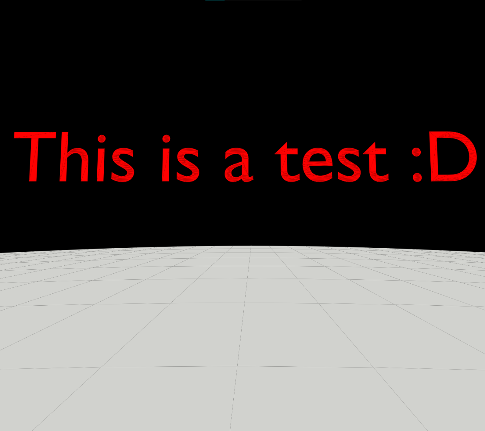
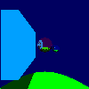
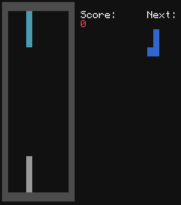
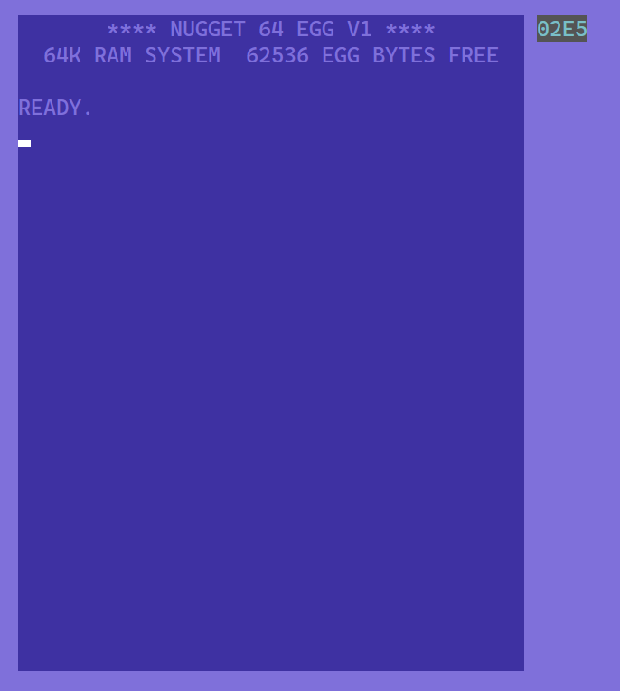
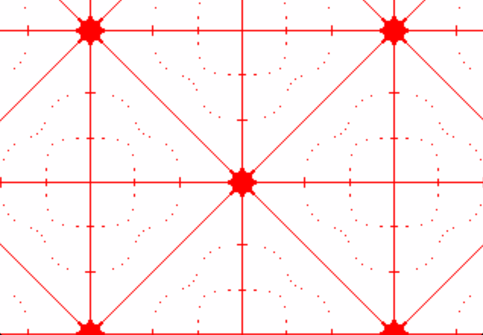

I made several iterations of it, the first one was in Python but got abandonned because of JS POWER. I then made new stuff on a brand new bot in JavaScript. I plan on re-implementing some features of the old iterations back into this one, as well as adding some more random stuff that I feel worth integrating into this project.
A processor I designed in Logisim-Evolution based on one I made in Scrap Mechanic, and another one I made in Turing Complete. It is turing complete, and it has access to a TTY screen, a keyboard and a pixel screen. I also made a simple compiler to write programs more easily.
I'm also working on an emulator / debugger that I will also include in the project.
Local Library Manager, a tool I made in JS to help my manage my local custom libraries across different porgramming languages. It has a basic console-based interface that uses Nerd Fonts glyphs, and it also accepts command-line arguments.

This is a very basic 3D renderer in an HTML page made with JS.
It can render basic scenes, and... that's abut it 😅. It can't run very big scenes because it lacks of optimization, and it has weird gaps between faces.
But since this is my first time doing that kind of thing, I feel like it's not too bad.

I thought I would give a try to raytracing, and it was really worth it, the final result is pretty good altho it lacks a bit of optimization. It can render basic scenes with a somewhat low resolution and quality relatively quickly. I still need to add a way of roatating shapes, and using custom models but for now it's enough for what it is.
CES
Chickin Entertainment System, a web project that uses a canvas and JS to display stuff on the screen.
It supports basic I/O, but everything can be re-implemented, I just wrote some utilities to make creating scripts with it easier.
It also used to power my GitHub homepage.
This project does not currently have its own repo

A tetris game I made that uses CC:Tweaked. Nothing really fancy about it, just a standard tetris game. It also supports online scoreboards and auto (sorta) updating.

Another virtual computer I made, it can read a custom assembler, read user input and write to the screen. I really like how it turned out but it still has a few issues with reading from stdin. I gave it C-64 colors cuz they look awesome. I wanted to make some sort of BASIC interpreter but quickly abandonned due to the severe limitations of the language. Since I'm working on a new one, maybe I'll try to make a compiler for this computer ¯\_(ツ)_/¯.

I recently got a Numworks calculator and I watched a video of Steve Mould, and I like messing around with functions, so that really got me inspired. It allows to see the anti-nodes of a 2D standing wave. Of course I didn't stop here, and I made another mode to see the nodes themselves and a mode that combines both. I wanted to run this much faster and with a better resolution, and turned it into a trippy effect that I added to my bot ($trip).